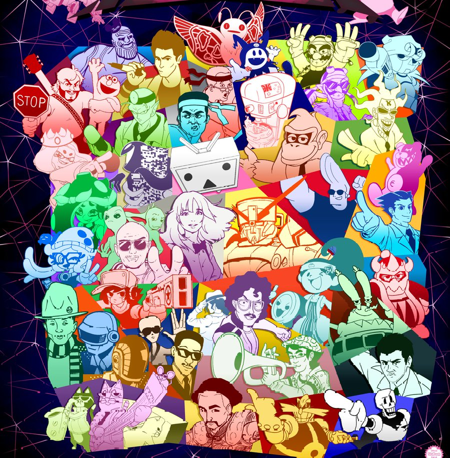

What is SiIvaGunner?
SiIvaGunner is a music parody group on YouTube that uploads videos posing as video game soundtracks, when in reality they're edited in different ways to sound different from the original music. This could include changing the melody of the original song to another song, or taking the existing music and mashing it up with a pop song, or other media.
Music & Videos
The biggest part of the channel are the various songs and videos created by the contributors to the channel. Visiting here will show some of the music and videos created by them.
 View Music & Videos
View Music & Videos
Artwork
The channel also has a comprehensive art team that specializes in producing various channel artwork for album covers, videos, and other media. Visit here to view some of it!
 View Artwork